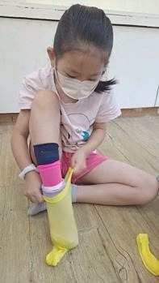
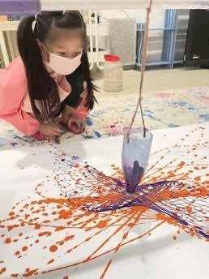
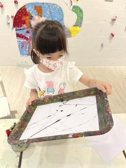
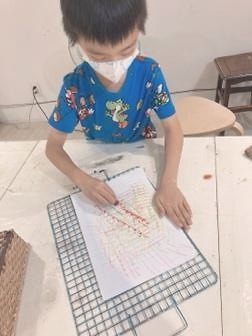

創作技法說明
鼓勵孩子在畫面中加入動作記號、象徵符號、拼貼單字、模擬聲音圖示、甚至在創作前後「表演畫裡的角色」或錄音說明畫作。
48. 多語言連結法 ( Multimodal Language Synthesis ) 孩子不只用畫表達 , 也用動作、聲音、符號、文字等進行創作 , 建立自己的「多語言藝術」。




鼓勵孩子在畫面中加入動作記號、象徵符號、拼貼單字、模擬聲音圖示、甚至在創作前後「表演畫裡的角色」或錄音說明畫作。
孩子在這個方法中，不只是使用材料或學習技巧，而是在嘗試中建立自己的判斷：我看見了什麼？我想怎麼改變？我可以用什麼方式表達？這些過程會慢慢累積成孩子面對世界的感受力、思考力與創造力。